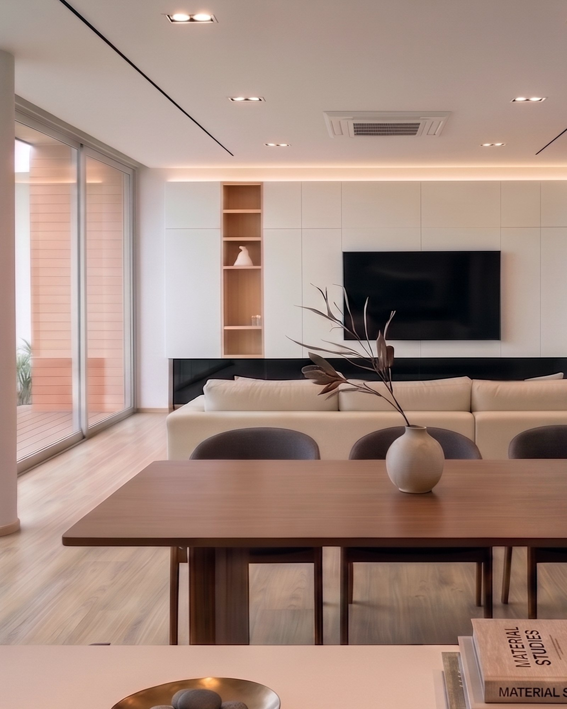
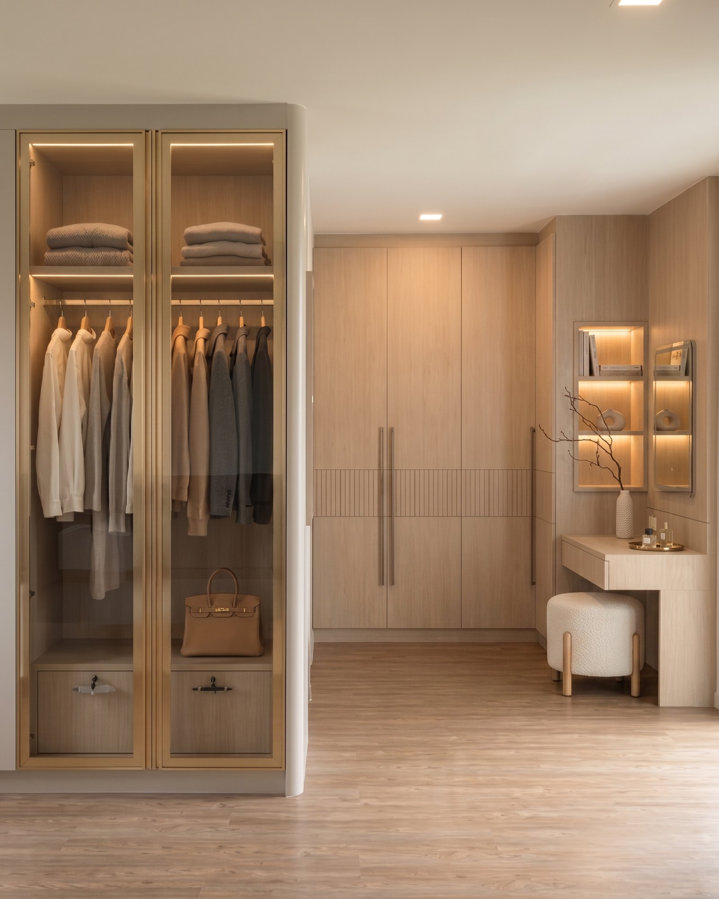
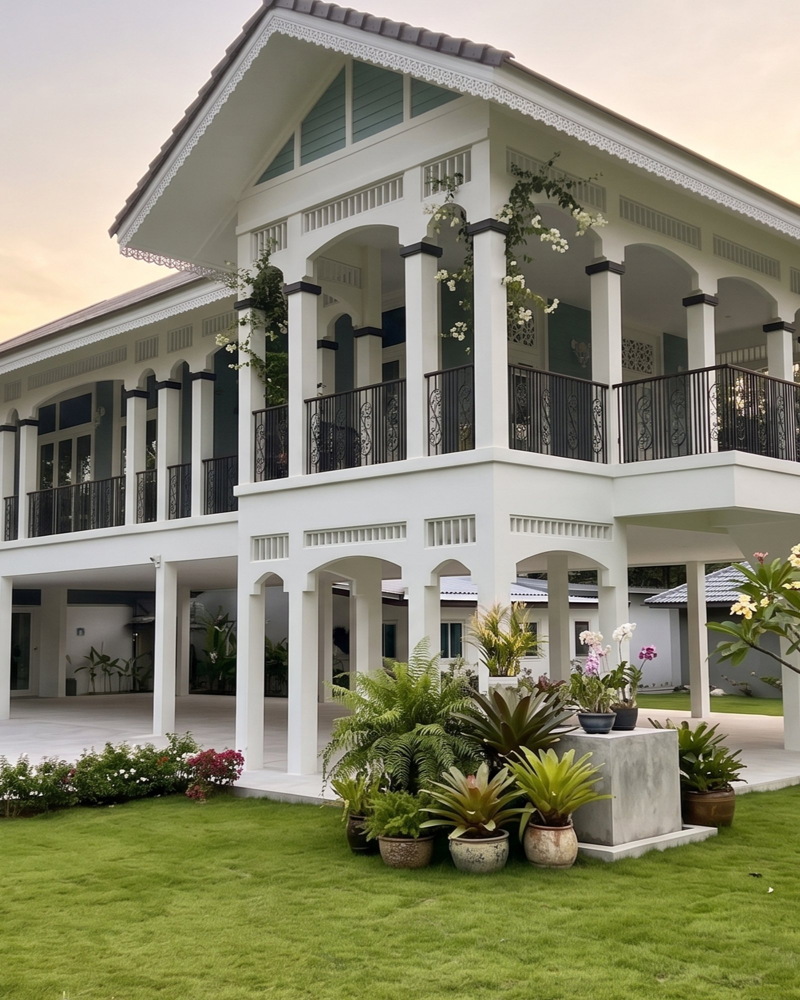

Selected Works
Design & Construction
ผลงานที่ผ่านมา — ออกแบบและก่อสร้างโดยทีมเดียวกันทุกตารางเมตร

SDC Office
A workspace built around focus and flow
สำนักงาน เอสดีซี

Chiang Rai Resort
Northern calm, crafted room by room
รีสอร์ท เชียงราย

Bangna House
A family home tailored to daily rituals
บ้านพักอาศัย บางนา

Khunyai House
A house that keeps three generations close
บ้านคุณยาย

Rama II House
Quiet materials for a full-speed city life
บ้านพักอาศัย พระราม 2

Khao Yai House
A weekend retreat facing the mountain air
บ้านพักตากอากาศ เขาใหญ่